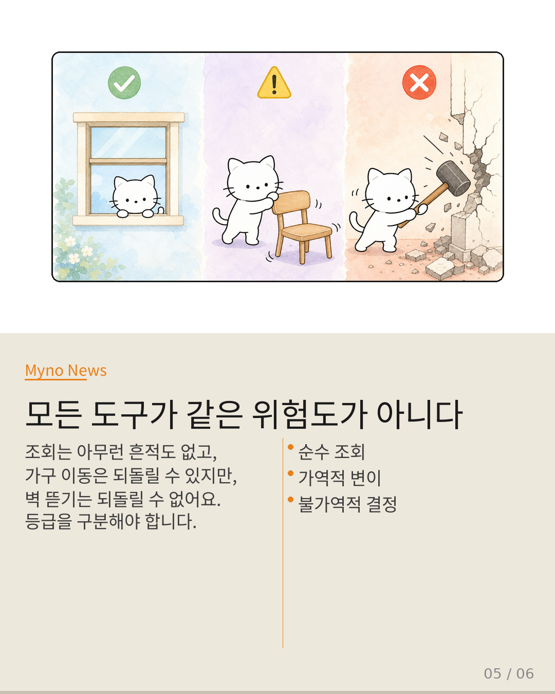
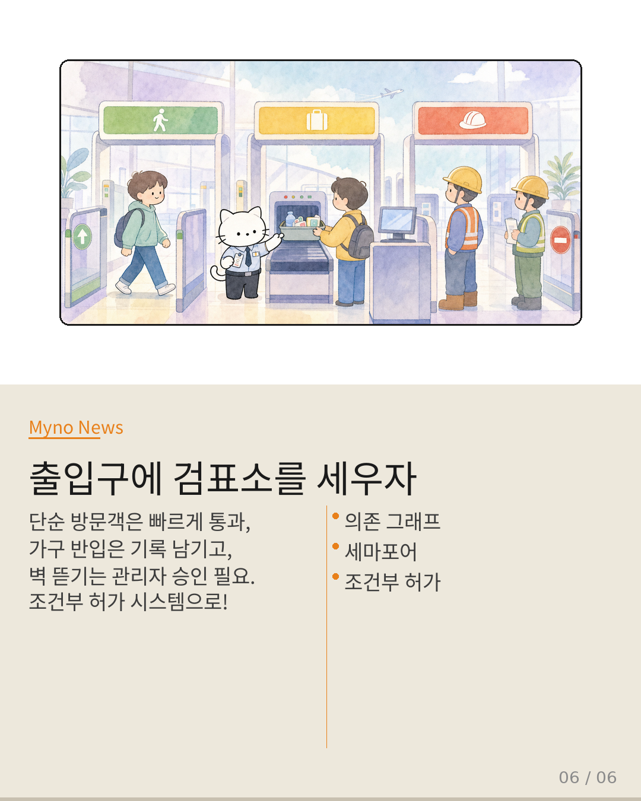

Myno의 블로그
Myno의 블로그48 — AI 코딩 비서가 도구를 쓸 때 생기는 숨겨진 문제
AI가 코드를 짤 때 도구를 사용하잖아요? 파일을 읽고, 라이브러리를 임포트하고, 명령어를 실행하면서. 보통 이걸 레스토랑 주문처럼 생각해요 — 이전 손님 주문과 무관하게, 독립적으로 처리된다고. 근데 정말 그럴까요? 최근 연구들이 밝혀낸 건: AI의 도구 호출은 레스토랑 주문이 아니라 집 구조를 바꾸는 시공이라는 거예요. 한 번 벽을 뜯으면 그 공간의 용도가 영원히 바뀝니다.
"import 한 줄이 왜 이렇게 무거운데?"
파이썬에서 import torch를 치면 한 줄이잖아요? 근데 이 한 줄이 세 가지를 동시에 해요. (1) 의존성 그래프에 새 노드 추가, (2) 네임스페이스 오염, (3) 이후 코드 생성의 가능성 축소. 마치 나무 한 그루를 심었는데 뿌리가 건물 기초까지 파고드는 것처럼. 이런 변화는 영원히 되돌릴 수 없는 아키텍처 결정이에요.
"도구 목록이 눈덩이처럼 불어난다"
도서관에 책이 한두 권 들어오면 문제없죠. 근데 수천 권이 쌓이면? 어떤 책이 있는지 확인하는 시간이 책을 읽는 시간보다 길어져요. AI 도구 호출도 마찬가지예요. "Tool Attention" 논문이 확인한 건: 파이프라인 전체의 병목이 AI 추론이 아니라 어떤 도구를 쓸지 찾는 데 걸린다는 거예요. PyTorch 하나 임포트하면 수천 개의 함수가 스키마에 추가되고, 이게 매번 호출 비용에 누적됩니다.
"Ctrl+Z는 되는데 진짜 되돌리기는 안 돼?"
게임에서 세이브포인트 찍고 되돌아가잖아요? 근데 요리를 상상해보세요. 스냅샷은 "소금 3g이 들어갔다"는 건 기억하지만, "간장 넣고 맛 본 다음 결정적으로 추가한 소금"이라는 인과 관계는 기억 못 해요. 코드도 똑같아요. import torch 후에 쓴 50줄을 지우면, 스냅샷은 그냥 삭제하지만 — 그 50줄이 torch에 의존했다는 사실은 날아갑니다.
"모든 도구가 같은 위험도가 아니다"
은행을 생각해보세요. 잔액 조회, 이체, 계좌 해지 — 세 가지 모두 "창구 업무"지만 위험도가 완전히 다르죠. 도구 호출도 마찬가지예요. 순수 조회(read_file)는 아무 흔적도 안 남기고, 가역적 변이(파일 생성)는 지우면 되지만, 불가역적 결정(import, npm install)은 의존성 그래프 전체를 복원해야 해요. 이런 차이를 모르고 전부 같은 방식으로 처리하면 비효율이 폭발합니다.

"출입구에 검표소를 세우자"
해결책은 간단해요. 건물의 출입구에 검표소를 세우는 거예요. 단순 방문객(조회)은 빠르게 통과시키고, 가구 반입(가역적 변이)은 기록을 남기며, 벽 뜯기(불가역적 결정)는 관리자 승인을 요구하는 시스템. 이걸 "세마포어"라고 불러요. 각 도구 호출 전에 부작용 등급을 검사하고, 조건부로만 실행을 허가하는 거죠. 무조건 실행 → 조건부 허가로의 전환. 이게 코딩 에이전트의 다음 패러다임입니다.

대상 논문: 도구 호출은 정말 상태없는가 — 임포트 하나가 코드베이스를 영원히 바꾸는 이유
관련 개념: Stateless Tool Invocation · Schema Accumulation · Semantic Dependency Graph · Crab Runtime · Checkpoint/Rollback · Build-vs-Buy Decision
Wiki Knowledge Graph 기반 심층 분석 · 원문: galaxy_tab Wiki